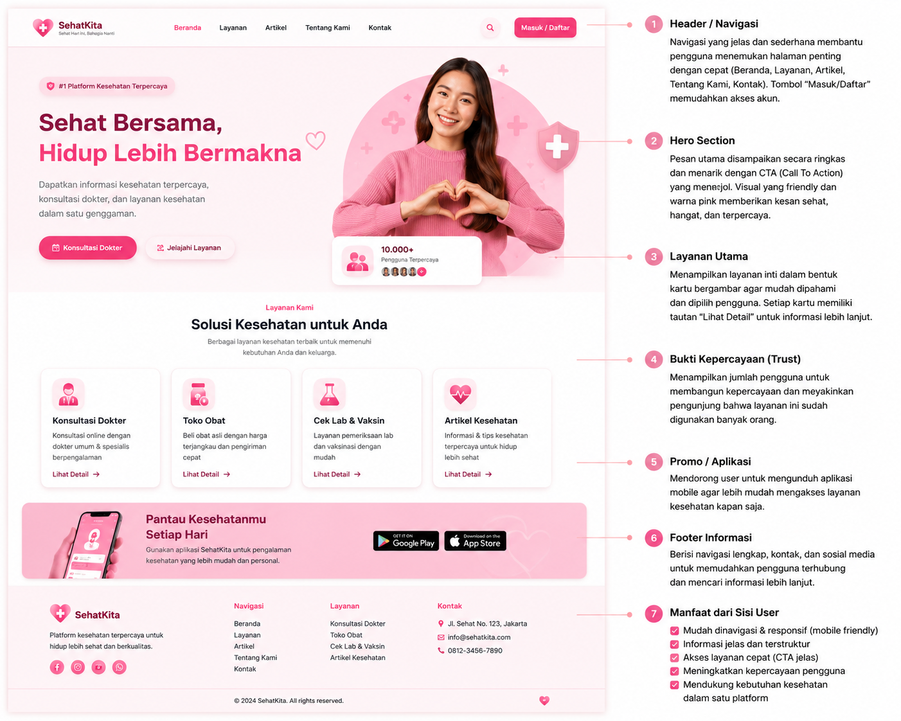
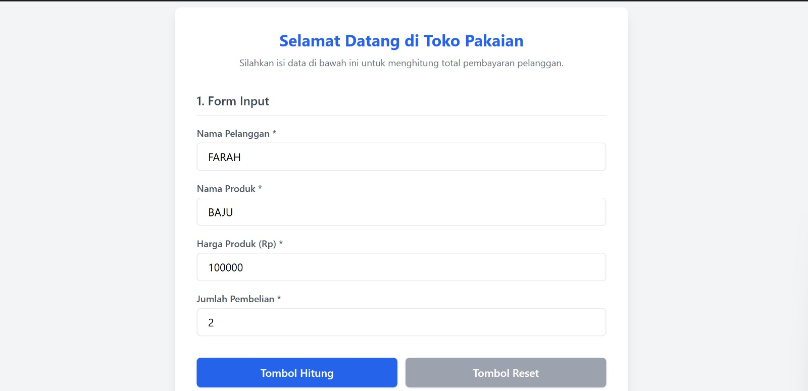
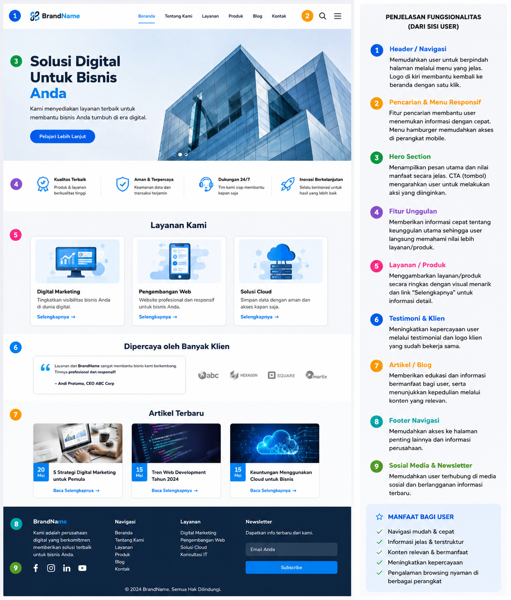
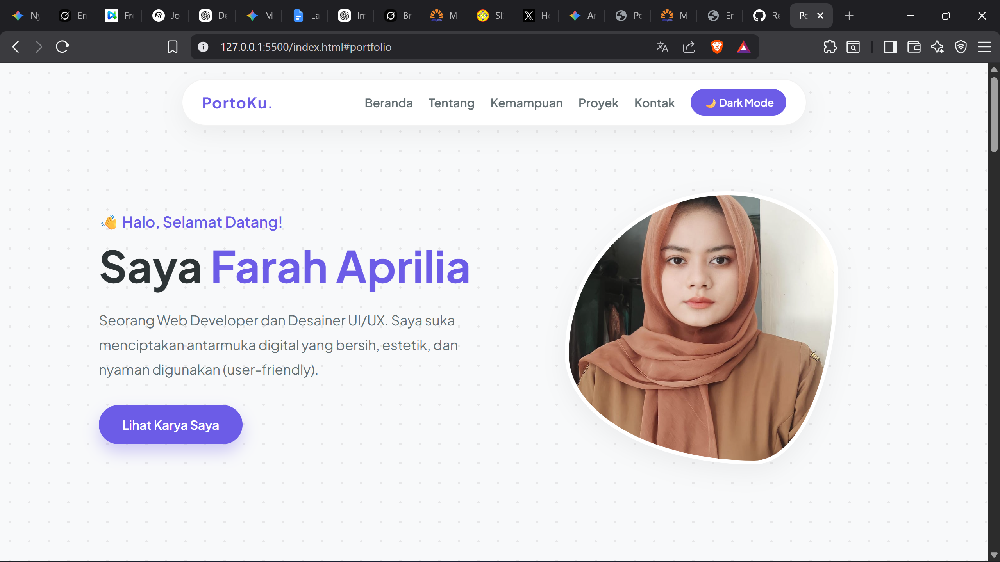

Seorang Web Developer dan Desainer UI/UX. Saya suka menciptakan antarmuka digital yang bersih, estetik, dan nyaman digunakan (user-friendly).
Lihat Karya SayaMengenal lebih dekat siapa saya di balik kode.
Saya adalah mahasiswa jurusan Teknik Informatika yang sangat antusias dengan dunia pengembangan web (*Web Development*). Fokus utama saya adalah membangun tampilan depan (Front-end) web yang tidak hanya berfungsi dengan baik, tetapi juga memiliki desain yang interaktif, tidak kaku, dan memberikan pengalaman yang menyenangkan bagi penggunanya. Saat ini, saya sedang menyelesaikan proyek portofolio untuk mata kuliah Pemrograman Web 1.
Teknologi dan alat yang saya kuasai.
Beberapa karya yang telah saya selesaikan.

Desain landing page modern untuk agensi digital dengan animasi *scroll-reveal* dan tata letak asimetris.

Tugas logika pemrograman untuk menghitung simulasi cicilan dan investasi dengan UI bergaya *neumorphism*.

Halaman e-commerce sederhana yang responsif, menampilkan daftar produk dengan fitur filter kategori.

Website portofolio pribadi (yang sedang Anda lihat) dengan tema terang/gelap dan elemen organik.
Punya ide proyek? Jangan ragu untuk menghubungi saya.